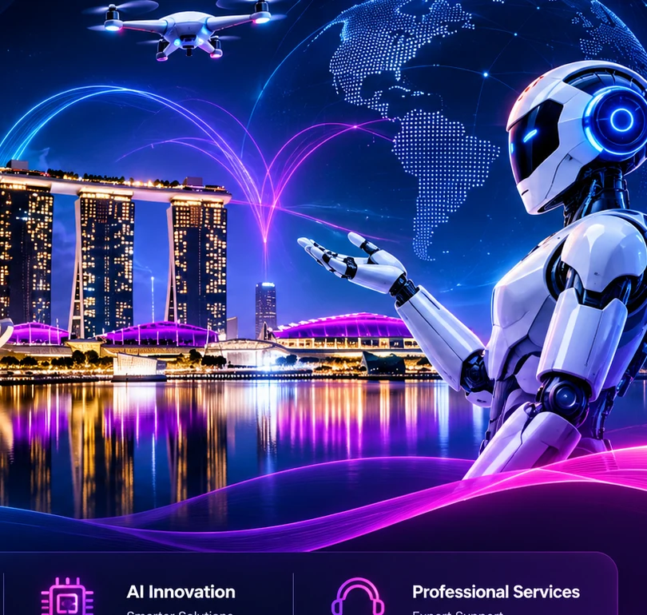

Our Vision
To make useful, dependable technology more accessible and help people and businesses move confidently into the future.
Innovating tomorrow with practical technology, reliable products and thoughtful support.

ROBOTICS & AI LAB PTE. LTD. is a Singapore-based technology company focused on mobile devices, robotics products, electronics research, and intelligent automation solutions.
We supply smartphones, telecommunications equipment, mobile accessories, robotic products, spare parts, sensors, controllers, and automation components for businesses and individuals.
Our objective is to deliver practical technology solutions that combine innovation, reliability, and long-term value. Through continuous research and development, we support customers with modern technologies that improve productivity and operational efficiency.
We are committed to providing quality products, professional technical support, and innovative solutions across evolving technology needs.
To make useful, dependable technology more accessible and help people and businesses move confidently into the future.
To provide quality mobile devices, robotics products and intelligent solutions backed by reliable service and practical expertise.
Innovation, integrity, customer focus, continuous learning and long-term value guide the way we work.

We bring together product knowledge, technical support and an interest in emerging technologies to help customers find solutions that are useful, dependable and ready for everyday needs.
Discover our services ⟶